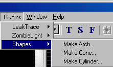
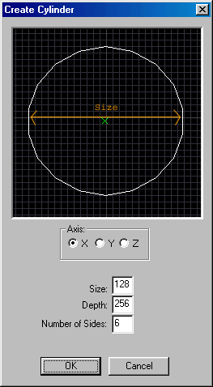
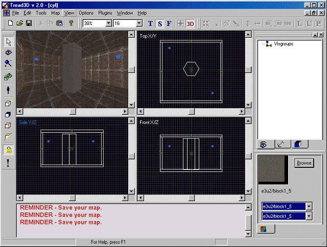

This is a walk-through as to how to use the Shapes Plugin for Cylinders.
Before starting this tutorial you should first get acquainted with the basics of the "Tread3D" editor; the screen and the various commands that are available.
As in the previous tutorials start "Tread3D".
Lets make a very basic room that is 512x512x256 units.
Also load a different texture in the Texture Window than the ones used to build the room.
Your screen should look like the one below.

Now click on the "Plugins" menu and scroll down to "Shapes".

You will see three choices and these are:
Make Arch (This will automatically create a arch)
Make Cone (This will automatically create a cone)
Make Cylinder (This will automatically create a cylinder)
Lets point to the "Make Cylinder" option.
A new window should now appear.
The "Create Cylinder" window should look like the one below.

Now some important notes:
The "Axis" input determines what axis the center line of the cylinder will be on.
The "Size" input determines what the diameter of the cylinder will be.
The "Depth" input determines the overall height of the cylinder.
The "Number Of Sides" input determines the number of "Faces" that will make up the cylinder.
Let's change the "Axis" to "Z" and use the default settings for the other inputs.
Just click "Create".
Your screen should look like the one below.

Now lower the cylinder so that it touches the floor of your room.
Your screen should look like the one below.

Now some important notes:
The "Cylinder" imported into your map has the original characteristics that you inputted.
The "Cylinder" is generated as a single "Brush".
The larger the "Number Of Sides" the smoother the cylinder will appear.
Thats all there is to it.
What you have done is "Imported a cylinder using the shapes plugin".
Now resave your work.